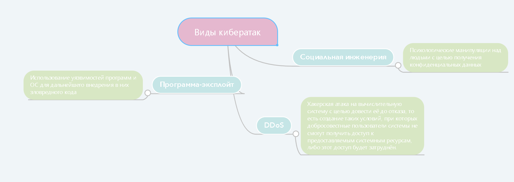
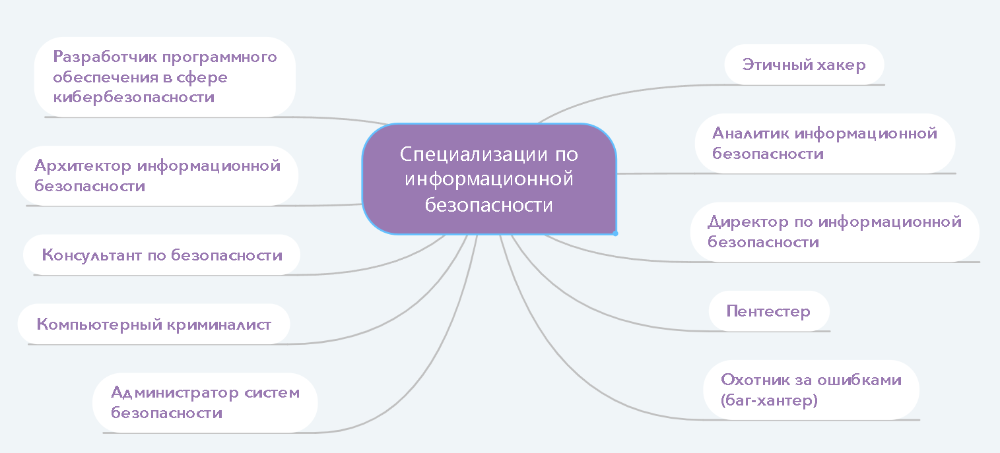

В современном информационном обществе самым важным ресурсом являются данные. Их утечка или утеря могут создать много трудностей как рядовым пользователям, так и крупным компаниям. Именно поэтому так важно задумываться о безопасности и сохранности своих данных в сети.
Кибербезопасность — это состояние защищенности информационной инфраструктуры и содержащейся в ней информации от внешних и внутренних угроз.
Кибератака – умышленное воздействие на информационную структуру с помощью программ.

Кибербезопасность требует грамотного обеспечения: наличия системы мер защиты информационной инфраструктуры и противодействия угрозам информационной безопасности.
Таким образом происходит переход в состояние киберустойчивости – способности информационной инфраструктуры успешно предотвращать реализацию угроз или быстро восстанавливаться после их реализации.
Подводя итог, стоит сказать, что никакие программы и устройства не защитят вас, если злоумышленник завладеет вашим доверием, поэтому лучшая защита от кибератак – ваши осторожность и бдительность.
Уязвимость – свойство информационной инфраструктуры или её объектов, которое позволяет реализовать угрозу. Факторы уязвимостей приведены ниже:

Таким образом происходит переход в состояние киберустойчивости – способности информационной инфраструктуры успешно предотвращать реализацию угроз или быстро восстанавливаться после их реализации.
Для обеспечения киберустойчивости необходимо принять следующие меры:
Информационная безопасность – одно из самых перспективных направлений в сфере ИТ. Профессионалы в области кибербезопасности защищают компании от утечек данных и прочих угроз. Ниже будут представлены некоторые специализации
